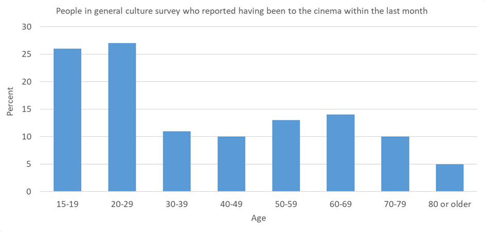

Redesigning a cinema web app
I am a huge movie geek, and I always felt like there was something romantic about going to the cinema. That sense of romanticism, however, has been tarnished a bit over the years, as I have grown frustrated with a few of the things I now have come to associate with the movie-going experience: the exceedingly high cost of candy, and a clunky, suboptimal website experience.
In this solo project, I attempt to use research and intuition to redesign a Danish cinema website for ease-of-use on mobile. This was my very first real design project. A lot of the techniques and software that I used, I had to teach myself along the way. For this reason, my approach shifted a few times. At the very end of this case study, I reflect upon the most important lessons this project has taught me.
This case study can be seen as two parts of a whole. In the first part, I evaluate the current website and gather knowledge through research. In the second, I show you the website redesign that I came up with.
Part 1: The current website
Before blindly rushing into a redesign, I had to validate that there was a need for it in the first place. Since I had no direct access to any of the company’s data, I had to get creative.
Nordisk Film Biografer is the largest chain of cinemas in Denmark, and owns 22 different cinemas, spread out across the country. The cinemas receive about 6 million visitors annually, in total. Their website gets about 513.000 views per month. Kino.dk, which is a ticket hub for 49 Danish cinemas, including the cinemas from NFbio.dk, gets about twice as many views. Kino.dk also offers ticket sales to Nordisk Film Biografers showings, but I have no way of knowing which of the two sites sell more tickets on Nordisk Film Biografers behalf.
The information I managed to scrape together was scarce and dated. The graph below is from a cultural survey from 2012. It tells me that teens and young adults are the primary movie-goers. I used this knowledge to focus on the younger of two personas. 
I wrote an email to Nordisk Film Biografer, hoping that they could tell me how many of their customers bought or reserved their tickets online, but this was not information that they were willing to disclose. This information would not directly affect the design, but it would give me a better insight into the size of the user base.
The Guerrilla Test
In order to learn more about how people interacted with the website, I wanted to conduct a usability test. Due to a lack of resources (both in time, manpower and funds), I decided to conduct a guerrilla test. This is an alternative to doing a full usability test, which comes with its own pros and cons. The key difference lies in how people are recruited for the test. In a traditional usability study, people are recruited in advance, for long (45 minutes - 1 hour) sessions. This allows for depth and rigor. The guerrilla version takes place in public, where people are recruited for short, on-the-spot sessions.
Pros
- Less preperation time
- Less time spent recruiting participants
- Less money spent on incentives for partcipants
Cons
- Less control over who participates
- Less predictable timetable
- Less time for testing
The most important of these points is arguably that you rarely get to test with people who are within resemble your users, but a guerrilla test is rarely the only test that you would do on a larger project. I argue that it serves the role of being a preliminary test, meant to catch broad issues. In my case, however, it stands on its own because of resource constraints.
Purpose
The test included just the mobile version of the current (as of date of test) website. The test focused mostly on navigation, as required by the different tasks.
Scope
The purpose of the test was to locate as many possible pain points as possible that may create friction in the flows related to the most common user goals. Secondarily, observing people interact with the current design would give me valuable insights into the user.
Length
15 minutes, max. Because I approached people during shopping, I knew that even 15 minutes would be stretching it.
Participants
Anyone with a smartphone.
Metrics
Due to the relative small scale of the project and small group of participants, the things I payed attention to were mostly qualitative. I payed particular attention to user pain points, critical errors and task completion rates.
In preperation of the test, I wanted to figure out what users wanted to accomplish when visiting the website. I made a survey on social media, asking what people usually went to cinema sites to do.
The three goals that were mentioned the most were:
- To see what movies are showing this week.
- To see the show times on a particular date.
- To see which movies are coming out in the near future.
Ordering a ticket came in 4th.
I used these three goals as the core focus for my usability test and to limit the scope of my redesign. In order to run a test with these goals, I had to rewrite them into tasks, and then build up scenarios around the task. Note that these scenarios were written and executed in Danish, but that the translated versions below match the phrasing and tone fairly well. I was careful to phrase the scenarios in such a way that the words did not match any navigation elements on the cinema website.
Exploratory task
This is the website. First, I would like you to look around and tell me your impressions. What do you think is possible on this site? You can scroll up and down, but please stay on this page to begin with.
Scenario 1:
You want to go to the movies, but haven’t decided on which movie to watch. You plan to go to the cinema this Sunday night. The closest cinema to you is in the Field’s shopping mall, in Copenhagen.
Find out which movies are showing on Sunday (the 10th).
Scenario 2:
You and your two friends are talking about watching the movie “Baby Driver”. You agree to go to the cinema on Wednesday the 13. Of September, at around 20:00. You decide to go to the cinema located in Kennedy Arkaden, Aalborg.
Reserve three (3) tickets for the movie “Baby Driver” on the 13. Of September at around 20:00 at the cinema in Kennedy Arkaden, Aalborg.
Scenario 3:
There aren’t really any movies currently showing that you want to see. You figure you’ll look ahead a little, to see what is coming out later.
Find out which movies are coming out in October.
In order to record the sessions, I constructed a DIY “Brundlefly”, as coined by Steve Krug, from a universal phone holder, a webcam and duct tape.

My initial plan was to conduct the test on moviegoers at the local cinema, but my idea was quickly shot down when I was politely rejected when I proposed the idea to them over the phone. The thought had crossed my mind that they might, but I wasn’t quite prepared for how many places would shut me out when I then called around to the places I had considered as backup locations. Most people were afraid that I would upset their customers, or asked me to pay a fee. I eventually had some luck at the very local grocery store. I had worked at this store when I was a teenager, so that had some sway.